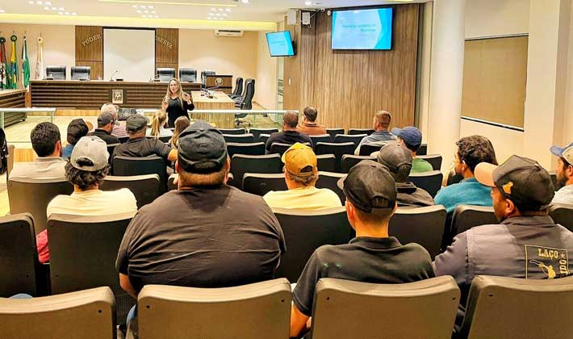

Quem somos?
Reserva é a cidade do tomate cheia
de trabalhadores, agricultores, produtores,
comerciantes e moradores.
Que celebram a força do tomate na nossa
economia e cultura.
Conhecemos uma produtora da área rural do município que mudou de vida e transformou o antigo terreno da família em uma lavoura produtiva de tomate com a ajuda do irmão mais novo. Juntos, irmãos tocam a produção e vendem tomates que chegam para diversas regiões do Paraná.
Na nossa visita nos deliciamos com uma receita de torta de tomate produzida com os tomates frescos da família.

Últimas Notícias
- Em Reserva, capacitação leva prevenção e conhecimento sobre infecção de brucelose no campo link de noticias reserva, O evento contou com a participação do médico veterinário Ricardo Cesar Berger, responsável técnico pela Adapar, e da enfermeira Taiane Guadagnin, gerente de Saúde do departamento de Epidemiologia do município. Entre os temas abordados, os destaques ficaram para os riscos de exposição a materiais biológicos, medidas de proteção aos profissionais envolvidos e a importância da saúde do trabalhador no manejo animal. 
- Com previsão de 21 milhões de toneladas, agricultores já colheram 90% da safra de soja